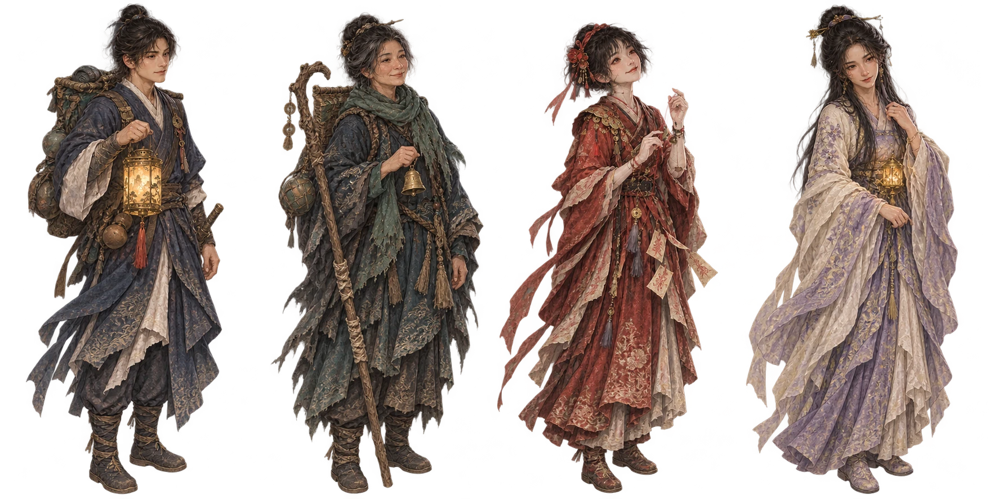
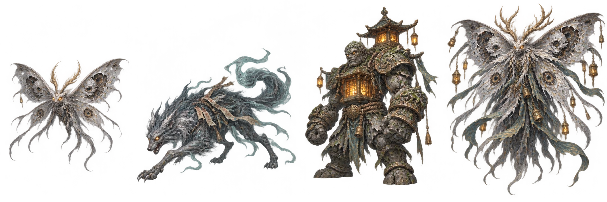
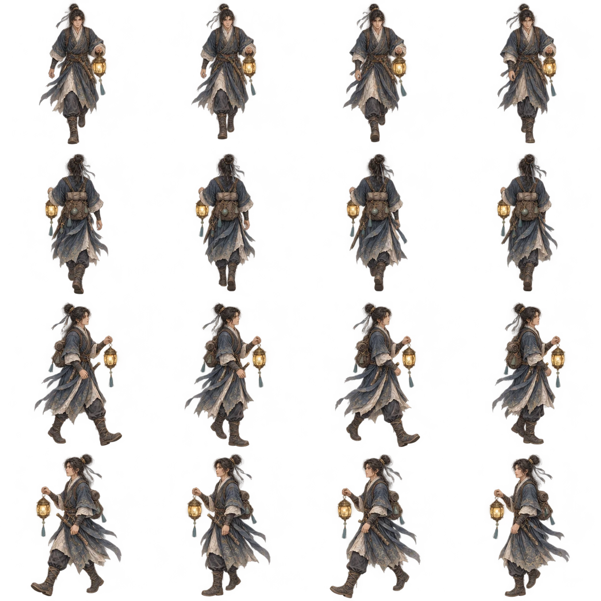
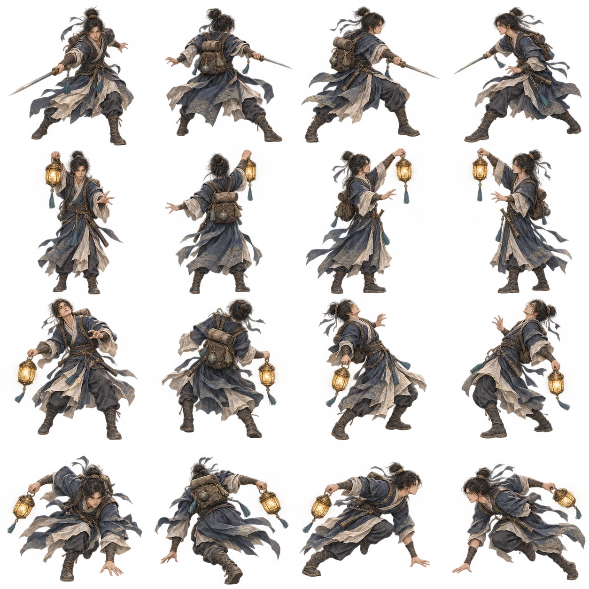
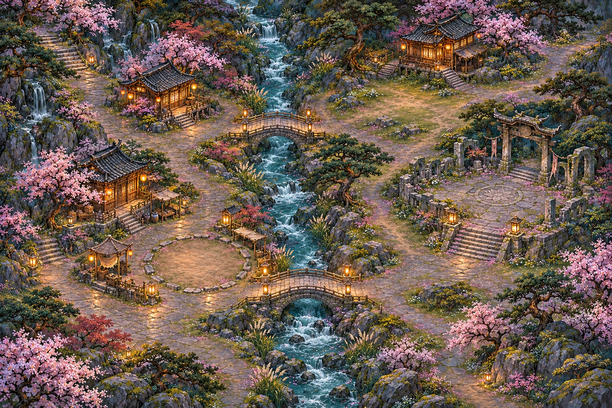
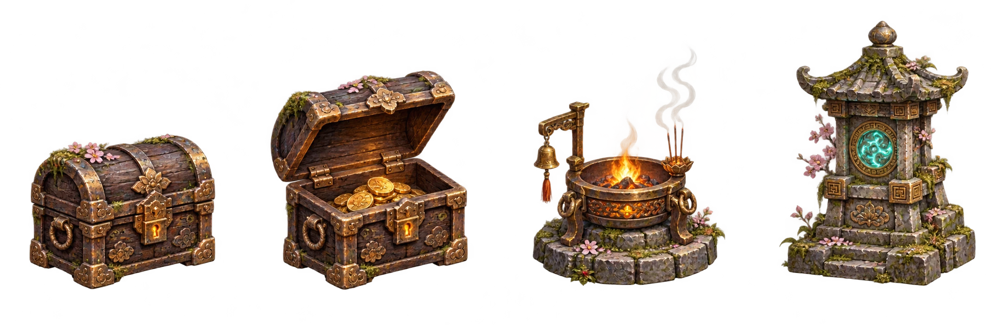

把灯火与人，重新画回来。
延续原有的东方幻想插画：青黛、旧金、真实的衣料与人物比例。先统一人物和怪物，再让动作、场景与玩法使用同一套美术语言。
01
同行的人

沈砚 · 修灯人闻笙 · 摆渡人阿绫 · 纸上客沈栖 · 守灯人
02
雾中的异物

食忆蛾 · 远程鳞粉雾狼 · 快速突袭石魇 · 蓄力重击蛾王 · 首领形象
03
动作与性格


04
可以走进去的青溪村

角色与怪物在地图中实际移动。道路、河道、桥梁和房屋边界与操作相连，不靠文字地点列表代替探索。
05
能伸手碰到的旧物
